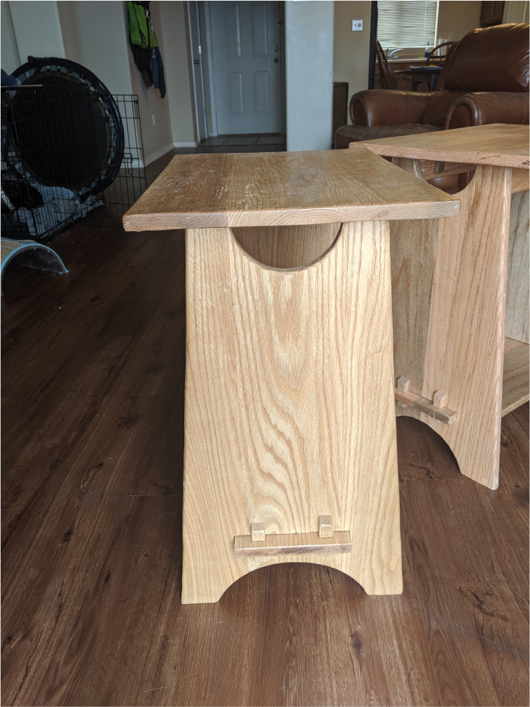

A Pair of Side Tables.

After recently moving from a small apartment, into a house, it was time to make the lowely love seat a bit nicer to sit at. My biggest issue with the loveseat was other then the floor there wasn't really a place to set a drink or a snack. So over the course of a few weeks I remidied that by creating a pair of matching Arts and Crafts style side tables. I ended up following a set of plans I found in my local library. They appear to be the same as the set that are found at Wood Archivist Arts and Crafts Side Table. Both side tables are built out of Red Oak, finished with a few coats of shellac, and some furniture wax.

Lessons Learned
I ran into some challenges with the through tenons for the shelf and the through holes with for the wedges. The largest issue being keeping my chisels sharp enough to cut cleanly, and being careful to avoid tearout when doing the initial through cuts.